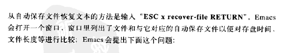

介绍
从今天开始使用Emacs了，本文只为记录我的学习过程，并不过多讲解Emacs。如果不认识Emacs，下面这段话会让你认识它。
命令
学习初期，这些命令都需要经常记忆，经常使用，不然容易忘记，那学习的时间可就浪费了。在这里，我按顺序记录下我学习到的命令，以便记忆。


本文标题:Emacs之路
文章作者:叶青云
发布时间:2017年5月7日 17:03
最后更新:2017年5月7日 17:03
原始链接: http://ilovejava.cn/posts/4a17a006/
许可协议: 署名-非商业性使用-禁止演绎 4.0 国际 转载请保留原文链接及作者。
赏

听说帅的人都已经打赏了(又支持微信又支持支付宝哟)